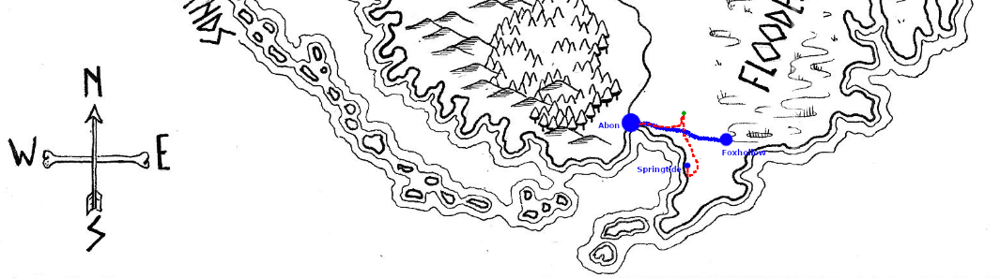

Mira ties her heavy blanket to her backpack and makes sure everything is secured. But before she picks up her staff she turns back to the iron pillar and considers it for a minute. Then she approaches and, without touching the metal, reaches forward and closes her eyes. She feels the familiar pull, and can now feel something more just beneath - a sense of connection that wasn't there before. Unconsciously her hand reaches for her belt and touches the iron knife that she has tucked behind a pouch there. A distant part of her thinks that she must get to work making a proper sheath for it, but that voice is drowned out by the presence of the pillar. Feeling more than a little self-conscious, Mira gives a short prayer of thanks to the pillar and the spirits of the Ironlands for their guidance and asks for their blessing as she begins this journey to help this poor, trapped soul.
Secure an Advantage: Wits
Roll: 2 + 3 (wits) vs 1 and 5 = Weak Hit
Burn Momentum: 7 vs 1 and 5 = Strong Hit
Momentum reset to 2.
Take control, make another move now and add +1
Prepare to act, take 2 momentum (4)
Mira doesn't know if she's imagining it, but the pillar seems to respond to her act of devotion and she feels like she has been boosted somehow. Her mood lifts and her confidence is bolstered. Unable to supress the joyful smile that suddenly breaks out on her face, she is comforted that at least right here and right now, she feels she has made the right decision in following this difficult path. Mira fetches her staff and sets off back downhill toward the trade road with a spring in her step.
Follow a Path
Roll: 2 + supply (4) + 1 (Devotant) vs 2 and 10 = Weak Hit
You complete the journey but face a cost or complication.
The move kindly gives us a list of possible complications to choose from. Most of these involve enduring harm, or stress, or penalties to our meta-currencies. We could play out bad weather or minor injury, but the last suggestion give us a narrative complication that looks a bit more interesting.
You face a complication or hazard at the destination. Envision what you find.
I think I'll roll on the settlement troubles Oracle when we arrive and see what turns up.
Mira safely journeys along the trade road, occasionally passing Warden recruits and veterans passing in the opposite direction. but is concerned that she doesn't pass anyone coming from the direction of Abon.

As she gets closer to Abon, sightings of other travellers slow down and she realises as she walks that for the last hour she hasn't seen anyone coming the other way. Nothing to worry about yet, maybe they just don't want to start a journey that they can't finish before last light, but she files it away as something to ask about when she reaches her destination.
Settlement: First look oracle
Roll: 48 = Numerous Grazing Animals
Roll: 5 = Boundary of Standing Stones
The sky is beginning to darken when Mira sees the walls of Abon on the horizon, and some activity outside the city as the local shepherds work to move their grazing animals back out of the open and into their sheds. She realises that she is more than a little relieved to see people going about their daily business after the dearth of travellers on the road toward the end of her journey.
Settlement: Projects
Roll: 76 = Hunting or Fishing
Roll: 63 = Trade
As Mira approaches the city gate the torches are being lit and a city Warden stops her and asks a few questions about where she has come from and her business in the city. She doesn't have a lot of news to share, but the Warden seems satisfied and allows her to pass.
Settlement: Troubles
Roll: 95 = Roll Twice
Oh dear
Roll 1: 52 = Sickness run amok
Roll 2: 53 = Allies become enemies
As Mira approaches the city gate the torches are being lit and a city Warden stops her. The warden is wearing a mask on her face and has a pouch of herbs at her neck, and is carrying a heavy club. Her eyes have dark rings underneath, as though she hasn't slept properly in days. The Warden warns Mira that there is a sickness in the city. That she is welcome to bed for the night in one of the animal sheds outside the walls and should turn back and should travel home tomorrow.
Name: 97 = Themir
Activity: No need to roll for this, she is obviously Guarding
Disposition: 67 = Desperate, makes perfect sense and means she will probably tell us everything without the need for compulsion.
First Look: Again, I've already decided she looks Exhausted so we're not going to roll.
Mira presses the Warden for more information and finds that her name is Themir, and that she hasn't slept in nearly two days. The nature of the sickness is a kind of fever that induces madness in those who catch it and causes them to see friends and family as threats. They will go into a manic rage, attacking anyone nearby until they collapse from exhaustion. It has spread quickly through the city and has consumed wardens, traders, fisherfolk and anyone who has spent any time within the walls. Only a few have died so far, but they expect that number to climb over the following days as the disease continues to progress and the few caregivers are overwhelmed.
Themir is clearly at the end of her tether, about to collapse from exhaustion herself. Mira has no experience with healing but feels compelled to help, even wondering if this might be related in some way to her calling. The timing is too perfect. She places a hand on Themir's shoulder, pulls her Iron knife from her belt and holds it flat to her chest. She then swears an Iron vow to help the city of Abon survive this outbreak in any way she can.
Swear an Iron Vow (Dangerous): Help the city of Abon survive this outbreak
Roll: 1 + 1 (Heart) vs 7 and 5 = Miss
You face a significant obstacle before you can begin your quest. Envision what stands in your way.
I decided the obvious price here would be something that slows us down, and I have just the thing.
-2 Momentum (2)
"And I will start here and now by relieving you of watch duty. You're asleep on your feet Themir, and you're no good to the city like that. Take my bedroll, find a spot by the gate. I will wake you if anyone approaches." Mira browbeats Themir, who is too tired to argue, into wrapping herself in the bedroll next to the gate and settles in for a night of sentry duty, closing the gate as dark properly falls.
Does anyone approach the gate during the night? (50/50): 56, Yes
From inside? (50/50): 40, No.
Character Descriptor: 94, Stubborn
Character Disposition: 72, Demanding
They sound delightful. We'll roll for a role as well, to see if helps us envision a reason why they want entry.
Character Role: Trader
At around midnight Mira is snapped out of her idle thoughts by a pounding on the gate and a voice demanding "Open up, I am tired and it's dark." Mira opens the watcher's panel to get a look at the figure by the light of the gate torches.
Character First Look: 19, Outcast
His clothes bely his manner. Well-worn and much repaired. His hair long and lank and his chin covered with several weeks growth. He carries a large trader's backpack on his back and his eyes snap to Mira as the panel opens. "Well? Are you going to keep me hanging around out here all night?" Irritated by his tone Mira snaps a reply. "You do know the city is full of sickness, right?"
Does the trader know there is sickness in the city? (50/50): 60, Yes
"I'm not travelling the roads at midnight for the fun of it, girl. I'm here with supplies. Open the damn gate."
Mira is still irritated, but if he's truly helping the city she can tolerate his bad attitude. At this point she decides it's time to wake Themir, who recognises the man as
Character name: 52, Nakura
Together Mira and Themir unbolt the gate and pull it open just wide enough for Nakura to enter before pushing it back shut. As Mira pushes the bolts back into place she hears Nakura appraising Themir of his journey and the supplies he has managed to source.
Theme Oracle: 31, Hope
"I journeyed to Foxhollow and found a Warden there who remembered seeing something like this many years ago. Old fella he was."
Action/Theme oracles: 37/42, Hunt/Vengeance
"He said it wasn't a normal illness, not something you cure with herbs or medicines. They had a mystic back then who said it was something magical, caused by some creature. A great beast. And when they chased it off the illness went away."
Themir gives him a cynical look and he holds up his hands, "I'm just telling you what I was told." Nakura takes a handful of roots from a belt pouch and holds it out. "They sent me back with as much of this stuff as I could carry, the backpack is full of it. You can't cure this thing with herbs, but boiled up as a tea these will help calm the afflicted for a while. Can't find them here, but the Flooded Lands is full of them. Risky to gather though, they grow next to the swamps."
"Right now we'll take any help we can get, thank you Nakura." Themir turns to Mira. "Thank you, I feel better. Go with Nakura, Ironsworn. He'll take you to the City overseer. See where they can use you." She takes position by the gate and Nakura begins striding into the city without looking back to see if Mira is following. She is forced to jog to keep up. After a minute he gives her a glance and says "Ironsworn eh? You're young for it but maybe I misjudged you. No time for pleasantries, but if you're here to help I appreciate it. There are few enough able bodies left."
Mira asks "Do you live here?" and Nakura laughs. "I don't 'live' anywhere, but I pass through regularly. Had a falling out with the overseer of my home village, but I don't mind the trading life. If you're asking 'why am I risking myself to help this place?' - every town, village and holding within a week's travel depends on this place for food, I know because I carry it and sell it. If Abon falls, the rest of the Ironlands falls in short order." They arrive at a wooden house a bit bigger than the surrounding buildings, with a torch out front and actual glass in the windows. Nakura turns to her and says "this is the home of the overseer. They won't stand on ceremony with things as they are, but be respectful and bear in mind everyone here is living on the edge right now. Keep calm, stay reasonable." Mira remembers his attitude at the gate but nods, and Nakura knocks three times and opens the door.
Has the overseer been stuck down by sickness? (Unlikely, 25%): 25, No.
At the table inside is a
Character first look: 57, Wounded / 28, Weathered
Character disposition: 8, Friendly
Character name: 21, Torgan
weathered man leaning heavily on a crutch under his right arm while he steadies himself on a table with his left. He is deep in conversation with a senior warden as Mira and Nakura walk in, but smiles warmly as he glances up and sees them enter. "Nakura, please tell me you bring good tidings?". Nakura gives a wry smile in return and replies "Just a warden's tall tales, but it's as good as anything we currently have. And a backpack full of roots to calm the sick. And apparently a young Ironsworn who is here to help us" and Nakura gestures toward Mira. "When I found her she was standing watch for Themir so she could get a few hours rest, but I'm sure you can find plenty more for her to do."
The overseer turns his smile on Mira. Tired and overworked, but genuine, he greets her. "Well met young Ironsworn. My name is Torgan. And you may be the answer to a prayer."